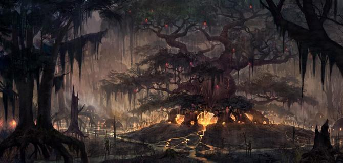

Чорні болота (оріг. «Black Marsh») - батьківщина аргоніан і хіст. Розташоване на південному сході Тамріеля. На півночі межує з Морровіндом, а на північному заході з Сіроділом. Клімат тут вологий і тропічний. Велика частина споконвічного аргоніанского населення мешкає в болотах. Доріг тут небагато, а основним засобом пересування є човен. Береги і північно-західні нагірні ліси нежилі. Найбільші міста Аргонії - Архон, Чорна Троянда, Гідеон, Торн. Данмери часто навідувалися сюди за рабами, поки король Хелсет не заборонив работоргівлю.